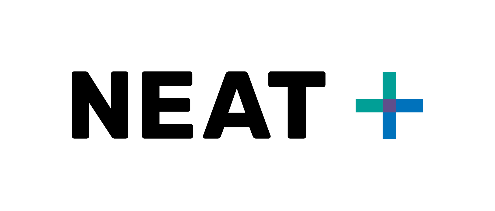

Humanitarian projects often prioritizes immediate action over longer term impacts. However, accounting for both is critical. The environment is vital to humanitarian action for several reasons:
- Environmental issues often cause or contribute to humanitarian crises.
- Humanitarian crises often negatively effect the environment.
- Environmental degradation can often limit recovery from humanitarian crises, which can in turn can cause or contribute to future crises.
It is difficult for humanitarians and those suffering from crises to fully and rapidly account for the environment, when immediate need is more time sensitive.

The NEAT+ helps humanitarians to quickly screen for and identifiy issues of environmental concern. Through easy-to-understand questions, and standardized responses, the NEAT+ turns abiguity into clarity by presenting a ranked list of environmental sensitivities (risks to look out for) and related mitigations (how to minimize the risk) and opportunities (long-term net-positive solutions).

I work on all aspects of the NEAT+, in collaboration with technical and environmental experts. Currently, it exists in two formats:
- The Rural NEAT+ (built in 2018 with The Joint Initiative), using Excel and KoboToolbox.
- The Urban NEAT+, which uses a custom Python/Django web application (not coded by me).

The tool is used by many large humanitarian orgnizations. Feel free to try these open source tools out yourself.